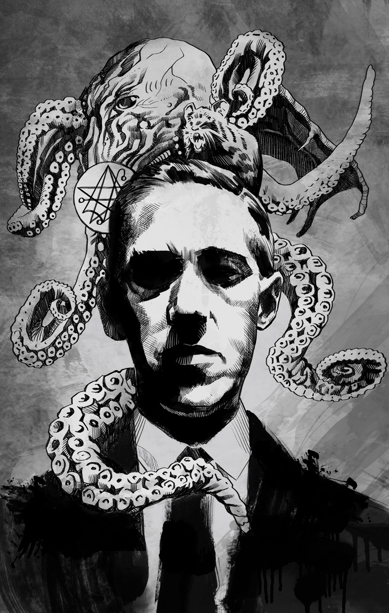

H. P.He is considered as the creator of the subjenre named after him. At heavy point, it coul be true. |
 |
|---|
H.P. Lovecraft (born August 20, 1890, Providence, Rhode Island, U.S.—died March 15, 1937, Providence)
was an American author of fantastic and macabre short novels and stories, one of the 20th-century
masters of the Gothic tale of terror.
Lovecraft was interested in science from childhood, but lifelong poor health
prevented him from attending college. He made his living as a ghostwriter and rewrite
man and spent most of his life in seclusion and poverty. His fame as a writer increased
after his death.
From 1923 on, most of Lovecraft’s short stories appeared in the magazine Weird Tales.
His Cthulhu Mythos series of tales describe ordinary New Englanders’ encounters with horrific
beings of extraterrestrial origin. In these short stories, Lovecraft’s intimate knowledge of
New England’s geography and culture is blended with an elaborate original mythology. His other
short stories deal with similarly terrifying phenomena in which horror and morbid fantasy acquire
an unexpected verisimilitude. The Case of Charles Dexter Ward (1927; published posthumously 1941),
At the Mountains of Madness (1931, published 1936), and The Shadow over Innsmouth (1931, published
1936) are considered his best short novels. Lovecraft was a master of poetic language, and he
attained unusually high literary standards in his particular fictional genre.
A large theme in cosmic horror is that forbidden knowledge leads to madness.
To explore this theme, there’s often some kind of cult or secret society that’s in charge
of the knowledge, and the main character is involved in helping it come to light, whether
willingly or unwillingly. This trope can also be accompanied by artifacts that connect with
a previously unknown deity. This knowledge usually uncovers some deeper truth about reality
or the universe and taps into existential dread.
A great example of this is Lovecraft Country by Matt Ruff, in which The Order
f the Ancient Dawn (a fictionalized society) plays a large role in the lives of
the main characters. There are also artifacts used in this novel to explore this trope.
H.P. Lovecraft's creation of his unique literary worlds, particularly the Cthulhu Mythos, was deeply influenced by his philosophical views, literary inspirations, and personal experiences.
Lovecraft's writing is rooted in **cosmicism**, a philosophy that emphasizes humanity's insignificance in the vast cosmos. He believed that the universe is indifferent to human existence, a theme that permeates his works. This perspective led him to portray ancient deities and cosmic entities as powerful yet uncaring beings, fundamentally altering traditional depictions of gods as benevolent protectors. Lovecraft's characters often face existential dread when confronted with these realities, leading to madness or despair.
Lovecraft was an avid reader and drew inspiration from earlier literary works. He was particularly influenced by writers such as Edgar Allan Poe, Lord Dunsany, and Algernon Blackwood, among others. These authors shaped his understanding of horror and the supernatural, which he expanded upon by introducing a new genre termed "cosmic horror." This genre focuses on the terror of the unknown and the incomprehensible forces beyond human understanding.
The **Cthulhu Mythos** began to take shape in the early 1920s with stories like "Dagon" and "The Call of Cthulhu." These narratives introduced a pantheon of ancient beings known as the **Great Old Ones**, who once ruled Earth and now lie dormant. Lovecraft's mythos evolved through correspondence with contemporaries like August Derleth and Robert E. Howard, who contributed to and expanded upon his ideas, creating a shared fictional universe.
Lovecraft's work often features settings in a fictionalized New England, where he combined elements of horror with science fiction. His stories frequently explore themes of decay and decline, reflecting his views on contemporary society during his lifetime.